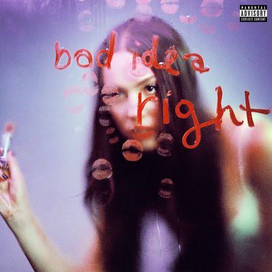
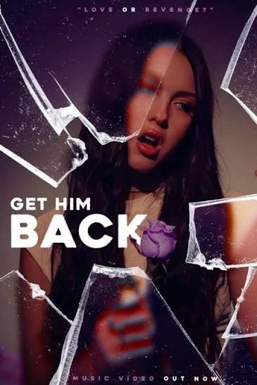
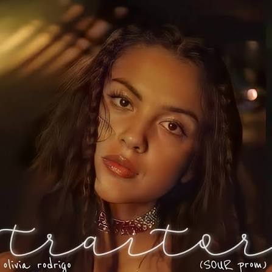

1. drop dead (2026)
El aclamado sencillo principal del álbum; una composición que transita entre el dream pop y el indie rock que aborda el choque entre las apariencias de felicidad y el dolor interno.
Ver másExplora el catálogo con las 12 canciones y sencillos más representativos, incluyendo su más reciente álbum:
El aclamado sencillo principal del álbum; una composición que transita entre el dream pop y el indie rock que aborda el choque entre las apariencias de felicidad y el dolor interno.
Ver másUna pieza reflexiva que utiliza analogías de carácter médico y de sanación para ilustrar el largo proceso de curar las heridas psicológicas dejadas por relaciones pasadas.
Ver másUna canción cargada de vulnerabilidad y cinismo pop que retrata el sentimiento de sentirse ridícula al seguir escribiendo música triste sobre alguien que ya no forma parte de su vida.
Ver másEl track post-punk y jangle pop más retorcido del disco. Musicalmente es un viaje instrumental increíble, describe ese nivel de dependencia emocional tan extremo en el que, cuando tu novio se va, te sientes como un zombi con "gusanos en el cerebro", incapaz de funcionar o de ver los colores del mundo.
Ver másUn potente drama gótico que empieza en el piano y escala en intensidad, comparando a una expareja manipuladora y mayor con un "vampiro" que le succionó la energía y la fama.
Ver más
Un tema divertido y desenfadado de rock alternativo que relata la lucha interna (y el autoengaño) al decidir ir a ver a un ex a sabiendas de que es una pésima idea.
Ver más
Una enérgica canción de estilo porrista y rap-rock impulsada por un doble sentido: las ganas de vengarse de él (get him back) y los deseos simultáneos de recuperarlo.
Ver másUn track cargado de guitarras distorsionadas donde confiesa una fijación casi enfermiza y competitiva por investigar el pasado de la exnovia de su actual pareja.
Ver más• Una melancólica balada pop que mezcla el dolor de obtener la licencia de conducir con la tristeza de manejar sola por las calles tras una dolorosa ruptura amorosa.
Ver másUn explosivo e irónico tema pop-punk donde reclama a su expareja lo rápido y fácil que logró superar la relación y seguir adelante con su vida.
Ver másUna canción de ritmo psicodélico que expone la frustración de ver a un ex haciendo exactamente las mismas actividades y bromas con su nueva pareja.
Ver más
Una balada cruda e íntima sobre el resentimiento de ser reemplazada casi de inmediato, sintiendo la traición emocional aunque formalmente ya no estuvieran juntos.
Ver más